Purchases on commission
The principal engages the agent to find, in the agent's own name but at the principal's expense, a suitable supplier, and to agree on the supply of goods (works or services) to the principal.
Factures that an agent receives from a supplier have these characteristics:
- The agent must register them on the Received worksheet of the facture accounting journal.
- They don't have to be entered in the agent's purchase book, because the agent has no right to value-added tax (VAT) deduction.
- They must be copied, and the copies must be certified and given to the principal.
- The agent must reissue them to the principal.
Factures that an agent reissues have these characteristics:
- They must be registered on the Issued worksheet of the facture accounting journal.
- They don’t have to be entered in the sales book because the agent has no obligation to charge VAT.
The following illustration shows the business process for registering intermediary deals. Rectangular elements are reflected in the system. Oval elements are present in the business process but aren't reflected in the system.
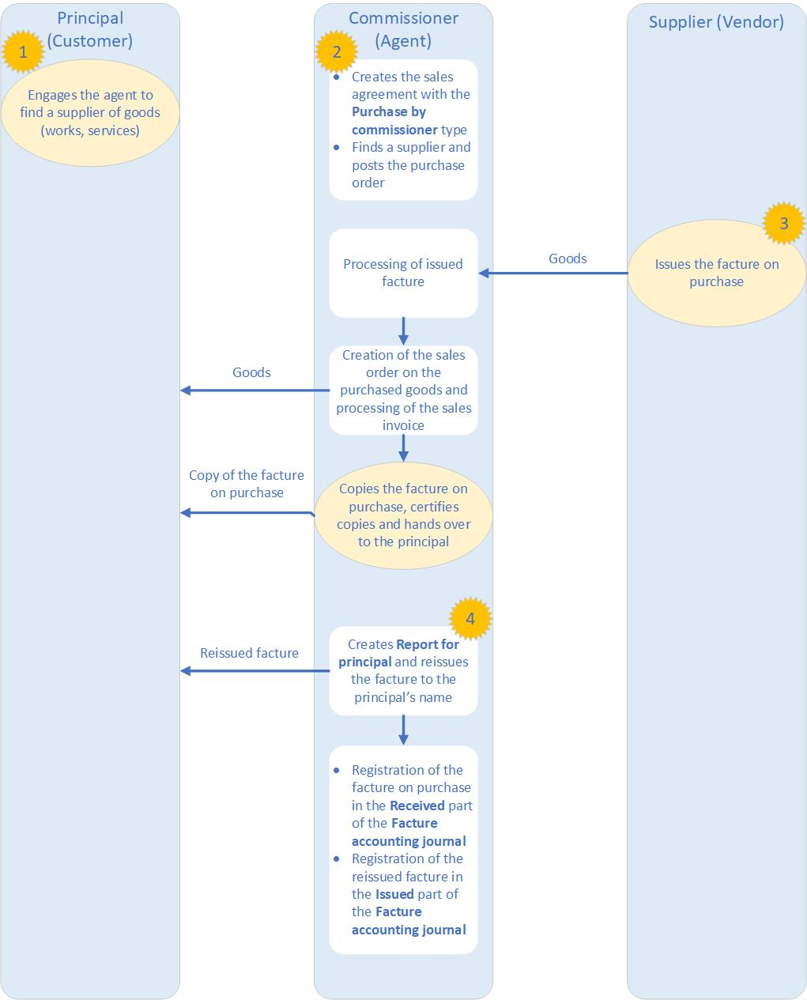
Create a sales agreement for a purchase by an agent
Go to Accounts receivable > Orders > Sales agreements.
Select New to open the Create sales agreement dialog box.
On the Customer FastTab, specify the customer account, and then, in the Sales agreement classification field, select Blanket sales agreement.
On the General FastTab, in the Document section, in the Sales agreement ID field, specify the identifier of the sales agreement.
Specify other details, and then select OK.
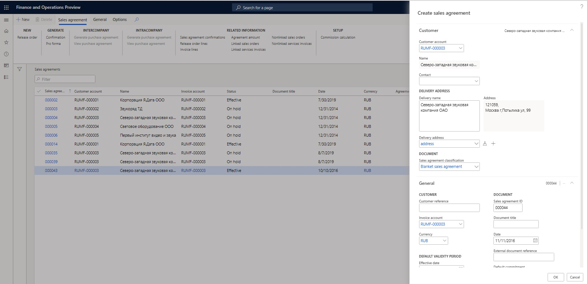
On the Sales agreements page, switch to the Header view.
On the General FastTab, in the Document section, in the Commission agreement field, select Purchase by commissioner.
On the Financial FastTab, in the Inventory profile section, specify the following details:
- In the Kind of activity field, select Commission agent.
- In the Inventory profile field, select the inventory profile that you created earlier.
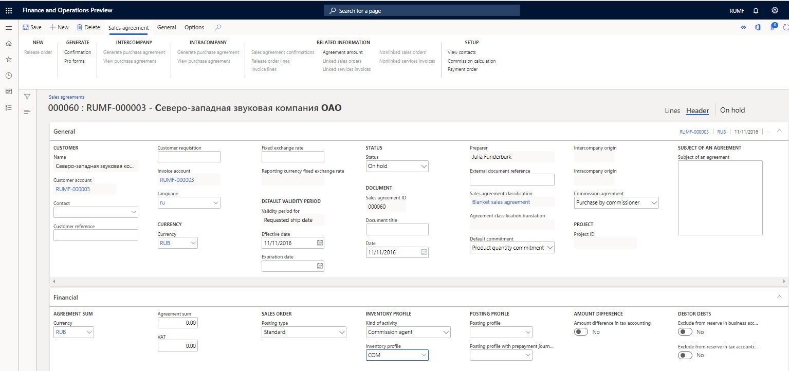
On the Action Pane, on the Sales agreement tab, in the Generate group, select Confirmation to update status of the agreement to Effective.
Create inventory owners (suppliers) for a commissioner
- Go to **Inventory ** > Setup > Dimensions > Inventory owners.
- Select New to create an inventory owner.
- In the Owner field, enter the code for the owner.
- In the Account type field, select Vendor.
- In the Account field, select the code for the supplier. The Name field is automatically filled in.
- Select Save.
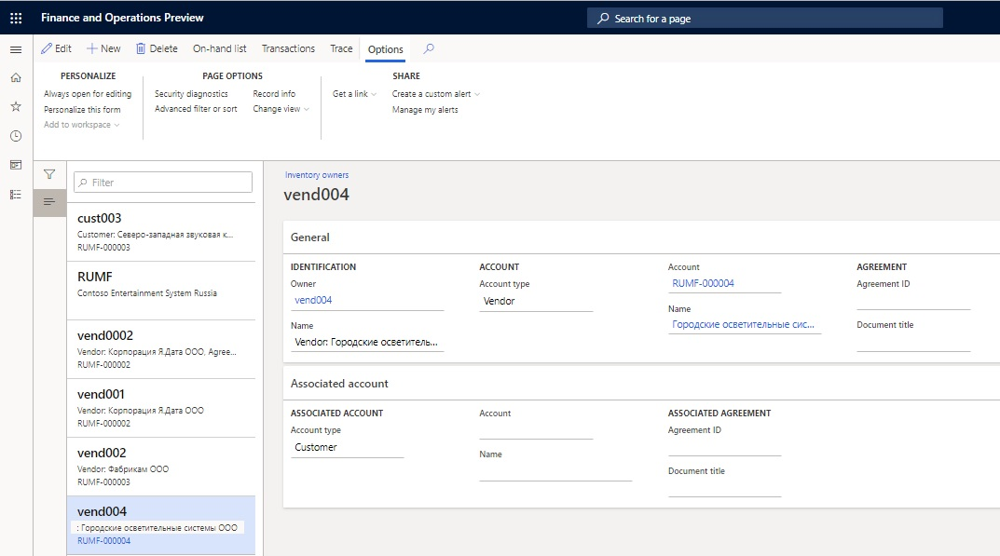
Create inventory owners (principals) for a commissioner
- Go to Inventory management > Setup > Dimensions > Inventory owners.
- Select New to create an inventory owner.
- In the Owner field, enter the code for the owner.
- In the Account type field, select Customer.
- In the Account field, select the code for the principal. The Name field is automatically filled in.
- Select Save.
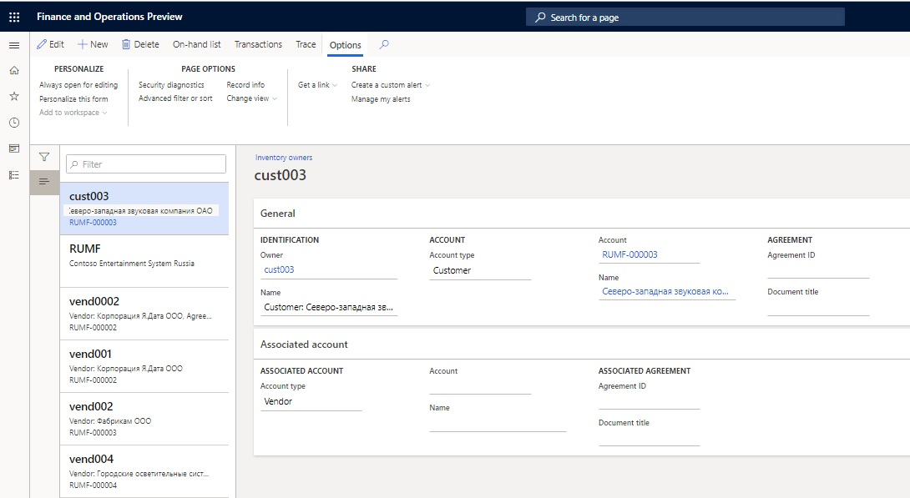
Create a purchase order and update the facture on goods that are purchased for a principal
- Create a purchase order.
- On the purchase order line, select an item number.
Note
The Tracking dimension field for the item should be set to the inventory profile that you created earlier.
On the Line details FastTab, on the Product tab, in the Tracking dimensions section, in the Inventory profile field, select the inventory profile that you created earlier.
If you don't plan to post the invoice, in the Owner field, select the owner (supplier) that you created earlier. In this way, you identify the supplier on the report for the principal when the facture is reissued.
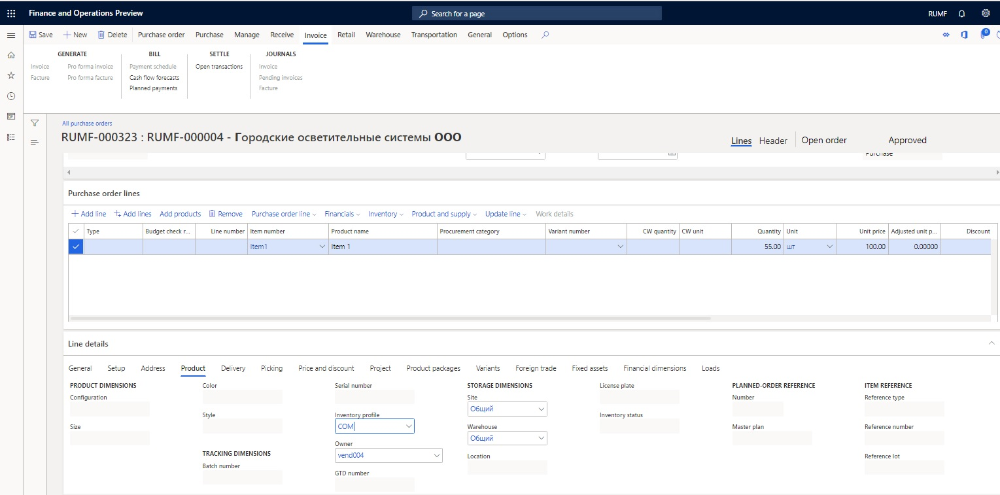
Specify other purchase order parameters, and create a facture.
Create a sales order and generate a sales invoice for goods that are purchased for a principal
Create a new sales order.
In the Sales agreement ID field, select the agreement for a purchase by the agent that you created earlier.
On the sales order line, select the item number that was purchased earlier.
Note
The Tracking dimension field for the item should be set to the inventory profile that you created earlier.
On the Line details FastTab, on the Setup tab, in the Inventory section, in the Reservation field, select Automatic.
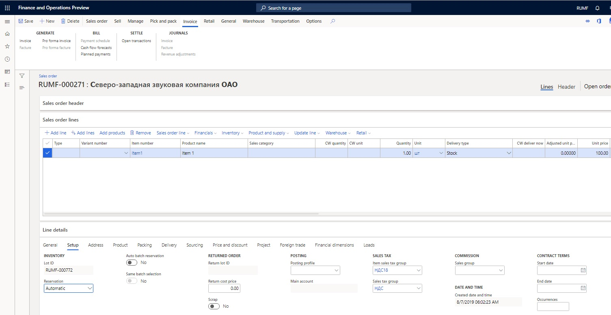
On the Line details FastTab, on the Product tab, in the Tracking dimensions section, make sure that the Inventory profile field is automatically set to the inventory profile that you created earlier.
In the Owner field, select the owner (principal) that you created earlier.
On the Sales order lines FastTab, select Inventory > Marking.
Select a purchase transaction, select Set mark now, and then select OK.
Post the invoice.
Create and print a report for a principal, and reissue the seller's factures to the principal
Go to General ledger > Periodic tasks > Commission trade > Report for principal.
Select New to open the Create report for principal dialog box**.**
In the From date and To date fields, specify the period for the report.
Note
You can leave the From date field blank.
In the Principal type field, select Customer.
In the Partner code field, select the customer account.
In the Agreement ID field, select the sales agreement.
Select OK.
Note
To create the headers for all the reports for the principal that are required in the specified period, select Functions > Create report headers on shipments.
Select Functions > Update lines on shipment to open the Generate report for principal on shipments dialog box, and then select OK to create the lines for every report.
Based on the factures that are received from the seller (vendor), you, as an agent, should reissue the factures on the shipped part of the goods to the principal (customer) on behalf of the seller. These new factures are numbered according to the facture's number sequence.
On the Report for principal page, use the Approved check box to approve the appropriate lines of the seller's factures. To approve all the lines on the report, select Approval > Approve All.
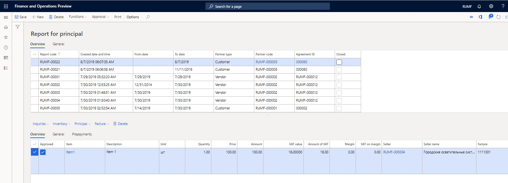
Select Facture > Update facture to generate reissued factures for the principal.
On the Update facture page, in the Commission trade section, make sure that the Seller and Facture fields are automatically set. If they are blank, select the supplier in the Seller field and the number of the purchase facture that was created in the Facture field.
Specify other required details, and create the facture.
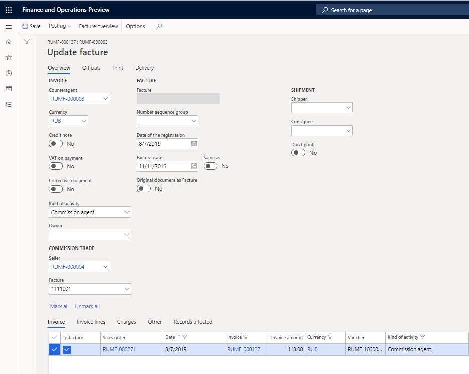
On the Report for principal page, follow these steps:
- Select Principal > Invoice journal to view the principal's invoice.
- Select Principal > Facture to view the principal's facture.
- Select Inquiries > Invoice journal to view the seller's original invoice.
- Select Inquiries > Facture to view the seller's original facture.
Select Print to open the Report for principal to Microsoft Excel dialog box, and then select OK to print the report for the principal.
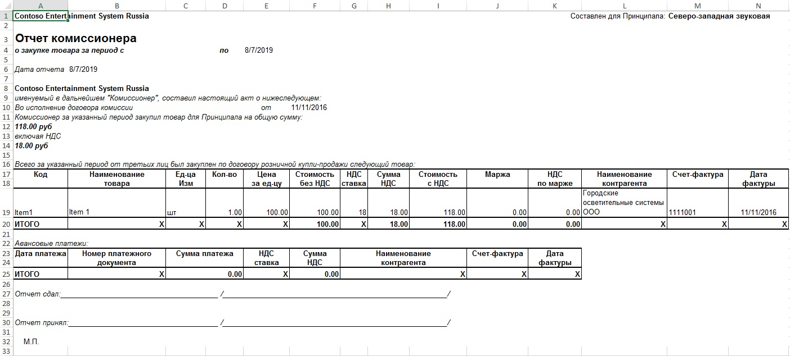
Print a facture accounting journal
- Go to General ledger > Inquiries and reports > Journal reports > Facture to open the Facture accounting journal dialog box.
- Specify the period for the report, and then select OK to print the facture accounting journal.
The Issued worksheet of the facture accounting journal shows the reissued vendor's factures. The information about the sellers is presented in columns 10 through 12.
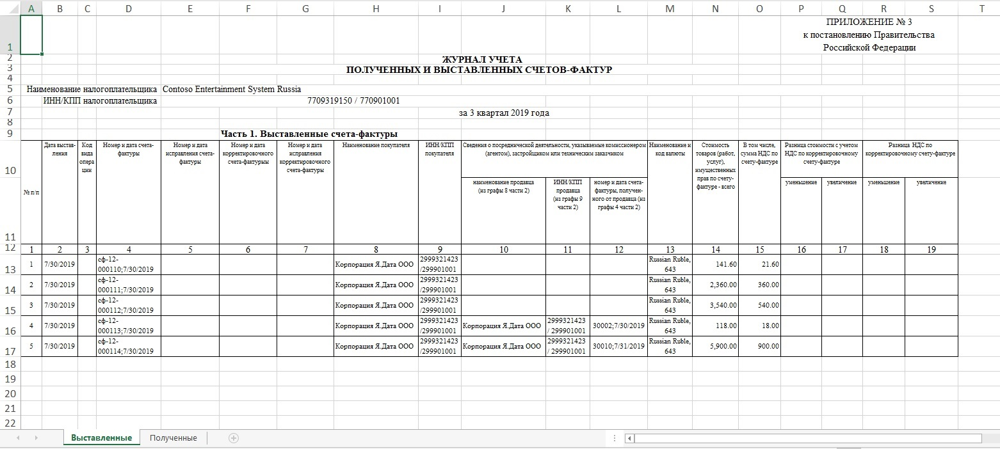
The Received worksheet of the Facture accounting journal shows the original seller's factures that were approved in the report for the principal.
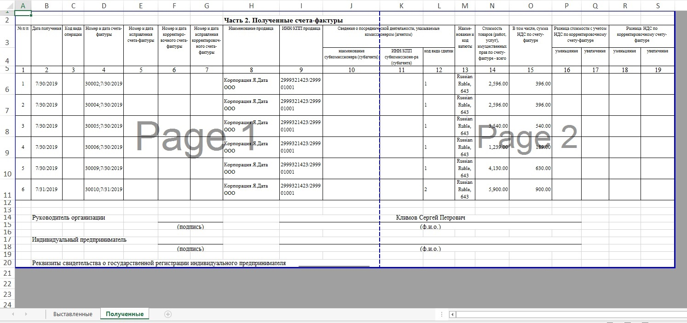
Prepayments
Prepayments that are received from a principal aren't a source for charging VAT. They must be re-sent to one or more sellers. These re-sent prepayments must be included on the report for the principal. Prepayments that are received from two or more principals can be re-sent to one seller. These re-sent prepayment must be included on the reports for the principals.
Create prepayments, a purchase order, a sales order, and a report for a principal
On the Customer payment journal page, create a customer prepayment, and then select Lines.
On the Customer payments page, in the Kind of activity column, select Commission agent to indicate that the prepayment will be re-sent to the sellers.
Note
If you don't see the Kind of activity column, right-click in the row that has the column names, and then select Add columns. Select the check box for the Kind of activity column, and then select Insert.
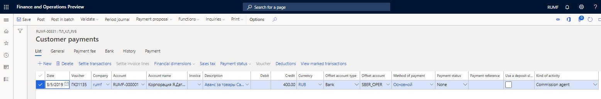
On the Vendor payment journal page, create a vendor prepayment, and then select Lines.
On the Vendor payments page, in the Kind of activity column, select Commission agent.
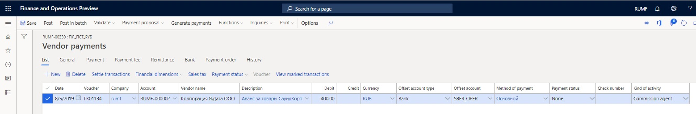
Create a facture for the vendor prepayment.
Create a purchase order and a facture.
Create a sales order and an invoice.
Create a report for the principal, and update the lines on shipments.
In the bottom part of the Report for principal page, on the Prepayments tab, in the Voucher field, select the vendor prepayment voucher to include the prepayment on the report for the principal.
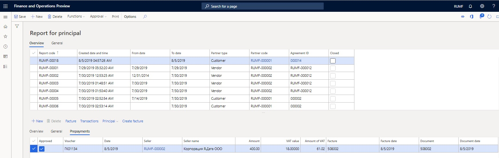
Select Transactions to view the allocated amount in the Amount in reporting currency field.
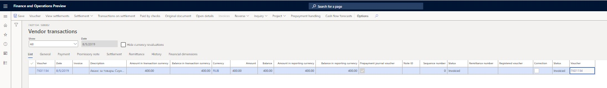
On the Report for principal page, approve lines on the Overview tab and vouchers on the Prepayments tab.
You can create a facture, and view the principal's invoice (or facture) or the original invoice (or facture).
Print a report for the principal
Print a report for the principal. The report for the principal has two sections: one for shipments and one for prepayments.

Create a prepayment facture
On the Report for principal page, on the Prepayments tab, select the Approve check box, and then select Create facture to register the principal's facture on the prepayment.
On the Facture create page, use the Mark check box to select the relevant prepayments.
Select Create facture to open the Facture create dialog box.
Specify the date of the registration, and then select OK.
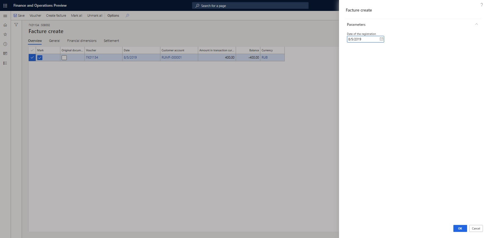
On the Report for principal page, on the Prepayments tab, select Principal > Facture to view the registered principal's facture for prepayment.
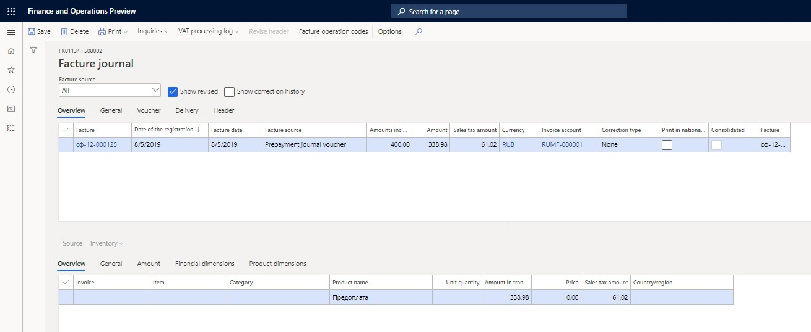
Select Print > Original to print the original facture, or select Print > Copy to print the facture copy.
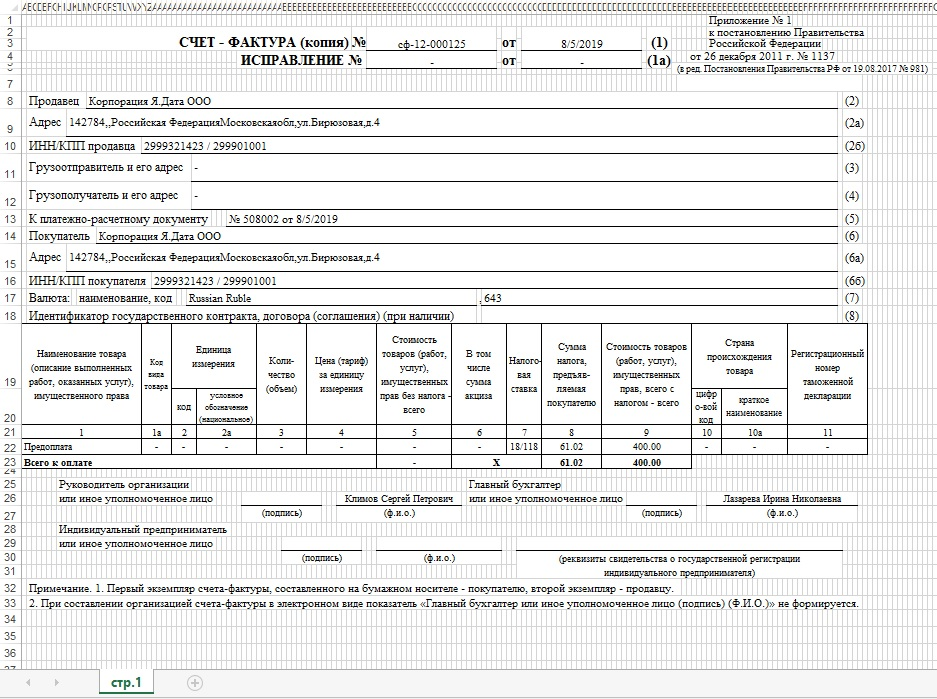
Create a facture accounting journal
The facture accounting journal shows approved lines. You can print a facture accounting journal.
The prepayments that are received from the principal will be transferred to the seller. When the seller issues the prepayment facture to the agent, the agent registers the seller's factures on the Received worksheet of the facture accounting journal. The Issued worksheet of the facture accounting journal reflects the factures that have been reissued to the principal.
The original factures on the delivery of goods from sellers can be allocated among the principals. The Received worksheet of the facture accounting journal reflects the original factures.
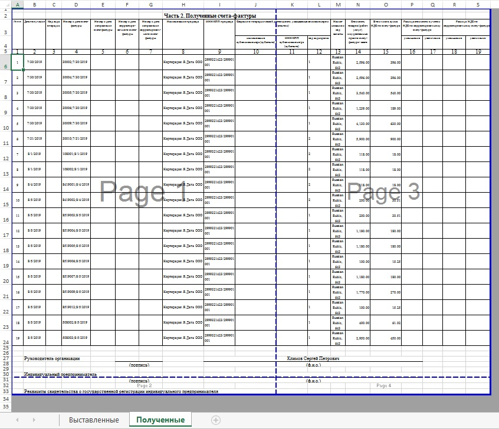
The Issued worksheet of the facture accounting journal reflects the reissued factures (that is, the allocated parts of sellers' factures). The information about the sellers is presented in columns 10 through 12.
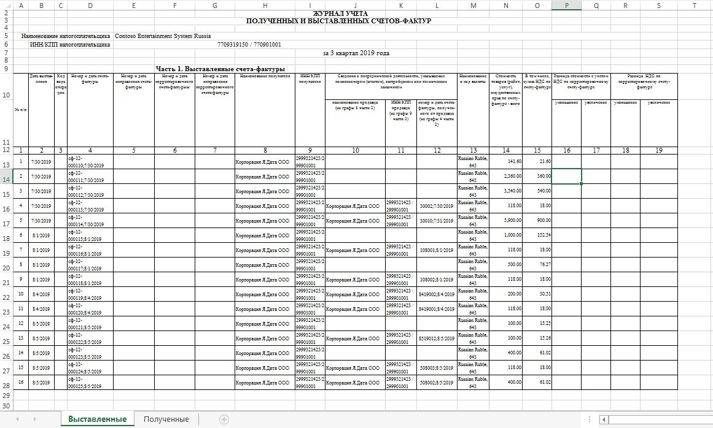
Find more details in the following topics: